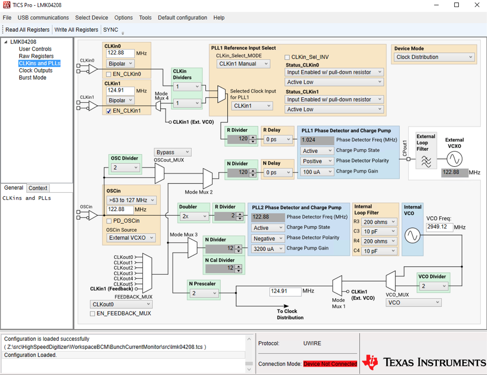
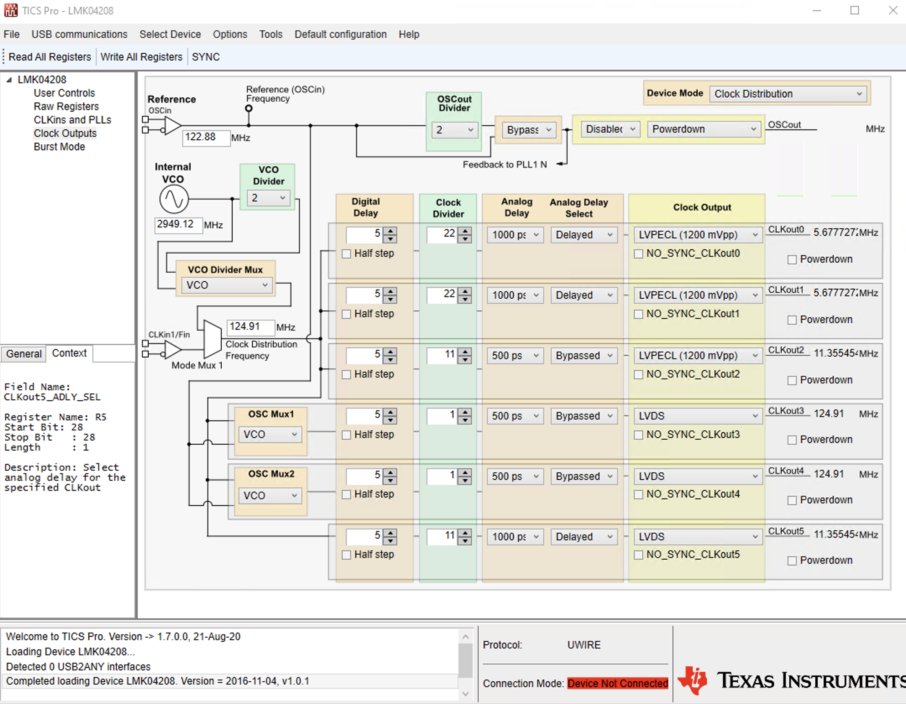
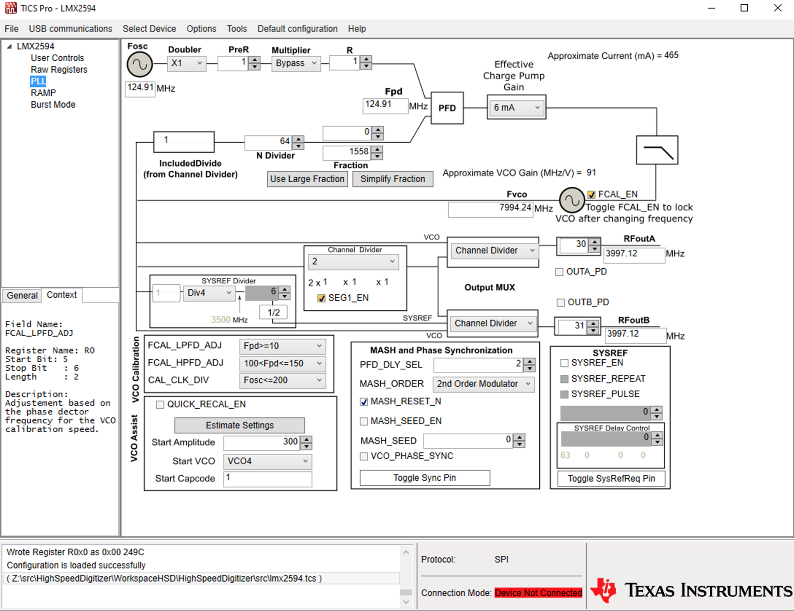
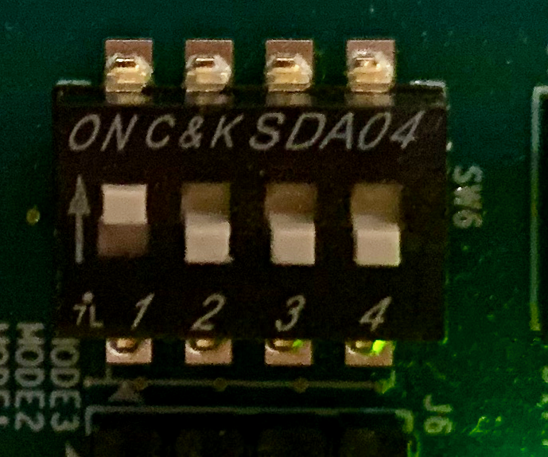

High Speed Digitizer Firmware
Introduction
The digitizer consists of a Xilinx ZCU111 RF-SOC FPGA board coupled to
a custom analog front end (AFE) daughter card. The AFE card provides programmable input coupling, offset, and gain.
Data Acquisition Sampling Clock Generation
The ADC sampling clock is synchronized to the storage ring RF
reference provided by the facility timing system. The ZCU111
RF clock synthesis subsystem produces the ADC sampling clock as well as some others as described
below. The values shown are for the Advanced Light Source.
FRF = 499.64 MHz
FEVR = FRF ÷ 4 = 124.91 MHz
Fref_LMK04208 = FEVR = 124.91 MHz (J95–J109 SMA jumper)
Fref_LMX2594 = Fref_LMK04208 = 124.91
MHz (LMK04208 output 4)
FVCO = Fref_LMX2594 × 64 = 7994.24 MHz
Fsamp = FVCO ÷ 2 = FRF × 8
= 3997.12 MHz (LMX2594 outputs, block design adcxx inputs)
FFPGA_REFLK_OUT_C = Fref_LMK04208 ÷ 11 = 11.355454545 MHz (LMK04208
output 2)
FADC_AXI = FFPGA_REFCLK_OUT_C × 104.5 ÷ 2.375
= 499.64 MHz = Fsamp ÷ 8 (MMCM)
FSYSREF = Fref_LMK04208 ÷ 22 = 5.67772727
MHz (LMK04208 outputs 0 and 1)
The above values meet a number of constraints imposed by the
hardware:
- Fsamp ≤ 4 GHz
- FFPGA_REFLK_OUT_C > 10 MHz (minimum reference to
MMCM)
- FSYSREF < 10 MHz
- FADC_AXI synthesizable from FFPGA_REFLK_OUT_C
with MMCM
- FADC_AXI integer multiple of FSYSREF
LMK04208 outputs 0 and 1 are delayed with respect to output 2
to avoid metastability in the FPGA SYSREF synchronization
firmware.
Changes to the above values require reconfiguring the LMK04208
jitter cleaner and the LMX2594 RF synthesizer chips as well as the GTY receiver settings as described
in the following steps. The clock constraints in
HighSpeedDigitizerTop.xdc are good for sampling frequencies up to 4 GHz.
- Choose the event system bit rate, ADC sampling rate and other timing values to meet the above constraints.
- Use the Vivado transceiver wizard to configure the GTY to
match the chosen event link rate.
- Build the project firmware.
- Run TICSPRO to set lmk04208.tcs and lmx2594.tcs to match the timing and
acquisition settings.
- Run the createRFCLKheader.sh script to convert the .tcs
files to their .h equivalents. These values are programmed
into the devices at software startup so changes don't require a firmware
rebuild.
- Set the MMCM ADC_CLK_MMCM_MULTIPLIER and ADC_CLK_MMCM_DIVIDER values
in config.h. These values are programmed into the MMCM at
software startup so changes don't require a firmware rebuild.
- Build the project software.
LMK04208 Jitter Cleaner
The jitter cleaner is configured to be a simple clock
distribution element as shown below. It would be preferable
to use the jitter cleaning capability but this is not possible
since the VCXO does not have adequate range to track the ALS
storage ring RF. The createRFCLKheader.sh
script converts the lmk04208.tcs and
lmx2594.tcs produced by the TICS Pro
application to C initializers.

Outputs:
- SYSREF_FPGA
- SYSREF_RFSOC
- FPGA_REFCLK_OUT
- LMX2594 RF synthesizers SYNC
- LMX2594 Reference
- Monitor SMA

LMX2594 RF Synthesizer
The RF synthesizer produces the ADC sampling clock as described
above. The device is configured as shown below:

Orbit Marker
The firmware places an orbit marker signal on the first GPIO pin (RFMC_DACIO_00)
of the AFE for applications that need this synchronization.
Setting
Network Parameters
- Depress the "Recovery" push button on the front panel while
the system is powering up or rebooting. This sets the IPv4
network address to 192.168.1.128 and the Ethernet MAC address to
AA:4C:42:4E:4C:01.
- Connect the chassis to a 192.168.1.0/24 network
and run the console.py script from
a host on that same network.
- Use the mac and/or net
commands to set the Ethernet and/or IPv4 addresses.
- Reboot or power cycle the system.
Alternatively, a
terminal emulator program and USB cable can be used to
communicate with the system through its USB console serial port
(115200-8N1) to issue the mac
and/or net
commands.
Diagnostic LEDs
The latter two ZCU111 diagnositic LEDs are assigned as follows:
- GPIO_LED_6 (DS12) — Event system 'Pulse Per Second' (Event
125)
- GPIO_LED_7 (DS11) — Event system 'Heartbeat' (Event 122)
Console Commands
The FPGA
sends startup and diagnostic messages to its USB console serial
port and to a UDP port accessible through the console.py
script. The serial port is run at 115200-8N1. Commands are entered using
a simple command line interpreter. There is no command
history and the only editing available is the backspace or delete
key which erases the character currently at the end of the
line. A carriage-return or line-feed character marks the end
of a line. Only enough of a command to make it unique is
required. Since no existing commands share a common leading
letter this means that only the first character of a command is
needed. The commands are:
- boot [n]
- The FPGA prompts for confirmation and then restarts as if
powered up. The optional numeric argument selects a different boot image (BOOT000n.BIN).
- cal [-t] [dac]
- Set the calibration signals. The -t argument enables the training tone. The dac argument sets the DAC value. These settings apply only until the gain of any channel is updated from the IOC.
debug [-s] [n]- The debugging flags are set to the specified value, if one is
given. The bits are
- Bit 0 — Enable messages related to the EPICS UDP port.
- Bit 1 — Enable messages related to the TFTP UDP port.
- Bit 3 — Enable messsages related to waveform
acquisition.
- Bit 4 — Enable messages related to I2C I/O
transactions.
- Bit 6 — Enable messages related to dynamic
reconfiguration port (eye scan) transactions.
- Bit 7 — Report the results of calibration operations.
- Bit 8 — Display a test pattern on the front panel display.
- Bit 9 — Show the contents of the AFE programmable gain amplifier registers.
- Bit 12 — Show ADC MMCM status.
- Bit 13 — Show all the RF synthesizer register contents.
- Bit 14 — Show the status of the RF ADCs.
- Bit 15 — Show the eye scan dynamic reconfiguration port
registers.
- Bit 16 — Reset the event receiver GTY transceiver.
- Bit 17 — Slide the event receiver GTY transceiver by one
bit. Should trigger an automatic GTY synchronization.
- Bit 20 — Resynchronize the RF ADCs.
- Bit 21 — Restart the RF ADCs.
If the optional -s
argument is present the value of the debugging flags will be
written to flash memory and the flags will be set to that value
on startup.
- DIR
- List the contents of the µSD card.
- evr
- Show the embedded event receiver settings.
- fmon
- Show the frequencies of the various FPGA clocks.
- log
- Replay console startup messages.
mac
[aa:bb:cc:dd:ee:ff]- Show the Ethernet MAC address if no argument is present
otherwise set the MAC address in flash memory. The FPGA
prompts for confirmation before writing to the flash memory.
- net [www.xxx.yyy.zzz[/n]]
- Show the network settings if no argument is present otherwise
set network parameters in flash memory based on the
argument. The network address is set to the specified
value. The netmask is set based on the optional network
address length (/n). If the network address length is
omitted a value of 24 (Class C network) is used. The FPGA
prompts for confirmation before writing to the flash memory.
- reg r [n]
- Show the contents of n (default 1)
general-purpose I/O registers starting at register r.
stats- Show the network statistics.
- tlog
- Start the event
system logger. Logging continues until any key is pressed. Normal
digitzer operations continue to take place while logging is enabled.
- userMGT [ppm]
- Set/show the offset of the clock used to drive the user
clock input to the event link GTY transceiver. The transceiver
clock/data recovery hardware has a limited range over which it will lock
to the incoming stream. An offset of 0 parts per million
corresponds to a user clock of 156.25 MHz, an event link bit rate of
2.500 Gb/s and an acquisition clock of 4.000 Gsamples/s. An offset
of -700 parts per million is appropriate for the ALS or the ALS-U
injector and booster ring event system. An offset of +700 parts
per million is appropriate for the ALS-U accumulator and storage ring
event system.
- values
- Show values of assorted system monitors
- xcvr [-n | -r]
- Generate event link GTY transceiver eye diagram. The
default is an ASCII-art image. The -n option changes the
display to a numeric value of floor(log2(errorCount))
at each point (points at which the error count saturated are
still shown as '@' characters and points at which the error
count is 0 are still shown as space characters). The
-r option produces a raw table with first column the horizontal
offset, the second column the vertical offset and the third and
final column the error count.
Support Scripts
- console.py
[[-a] IP_name_or_address]
- Connect to the console port of the FPGA.
- lmx2594.py [-h] [-f FILE] [-p
PREFIX] [-v]
- Show or, if the TICS Pro FILE
is specified, set the values of the LMX2594 frequency
synthesizer registers.
- createRFCLKheader.sh
- Convert the lmk04208.tcs and lmx2594.tcs files produced by the
TICS Pro application to C initializers.
TFTP server
The FPGA
firmware, bootstrap loader and executable image are stored in a
single file on the micro SD card. This file, with name
'BOOT.bin', can be uploaded to, or downloaded from, the card using the TFTP server in the FPGA application.
A
snapshot of the front
panel screen can be obtained by downloading the file 'SCREEN.ppm'
from the FPGA. Fetching the image from the display takes
over a second during which time other operations, such as communication
with the IOC, are suspended.
File
transfers must be performed in 'octet' (binary) mode. The
TFTP server is limited to a single active transfer at a
time. Don't attempt simultaneous transfers from multiple
clients.
Creating Bootable Image
Run make in the scripts directory. Transfer
the resulting BOOT.bin file to the boostrap micro SD card using the procedure outlined below.
Updating Flash Memory Bootable Image
To minimize the chances of ending up with an unbootable ('bricked')
system the procedure noted below should be followed to update the flash
memory.
- Use the programFlash.sh script in the IOC FPGA directory to
transfer BOOT.bin to BOOT0002.bin on the micro SD card. The '2'
argument arranges for the name change between the local filesystem and
the micro SD card. For example:
sh programFlash.sh 2 131.243.93.161
- Connect to the FPGA console and boot the new image by providing the '2' argument to the 'boot' command:
boot 2
Alternatively, press and hold the Display button then press the Reboot/Recovery button for a couple of seconds.
This directs the FPGA to boot the alternate image that was transferred to the micro SD card in step 1.
- If the FPGA boots and starts properly go on to the next step,
otherwise press the Reboot/Recovery button for a couple of seconds or
power cycle the unit to reboot the old BOOT.bin.
- Use the programFlash.sh script in the IOC FPGA directory to transfer
BOOT.bin to BOOT.bin on the micro SD card. For example:
sh programFlash.sh 131.243.93.161
- Connect to the FPGA console and issue the 'boot' command with no arguments, or press the Reboot/Recovery button for a couple of seconds, or power cycle the unit to reboot the new BOOT.bin.
If things go wrong and you end up with a bricked system your only
recourse is to remove the micro SD card and transfer the BOOT.bin image
to it directly.
Front Panel
The ZCU111 PMOD1 connector connects to the front panel Display
and Reset/Recovery push buttons and drives a 240×320
display equipped with a Sitronix ST7789V controller configured for
4-line serial operation. The connector pin assignments are
shown in the following table.
PMOD1
Line
|
ST7789V
Line
|
Description
|
0
|
|
|
1
|
SDA
|
Bidirectional data transfer.
|
2
|
–
|
Enable display backlight
driver
|
3
|
SCLK
|
|
4
|
|
|
5
|
|
|
6
|
–
|
Reset/Recovery button
(active low, on-board pull-up)
|
7
|
–
|
Display button (active low, on-board
pull-up) |
The buttons provide momentary closure to ground. If the
Reset/Recovery button is held down at FPGA boot time the Ethernet
MAC and IP addresses are set to default values, as described above.
The Display button cycles through the assorted display
pages. If the display button is held down while the
Reset/Recovery button is pressed to an alternate boot image
(BOOT0002.BIN) will be loaded. If the display is showing a warning
message (black
text on a yellow background) pressing and holding the Display
button for more than a second will clear the message and restore
normal display operation. The FPGA 'GPIO_SW_W' push button
has the same effect as the front panel Reset/Recovery button and
the FPGA 'GPIO_SW_E' push button has the same effect as the front
panel Display button.
A typical display is shown below:
The time and date obtained from the timing system is shown at the
left side of the bottom line. The green heartbeat indicator at
the lower right corner flashes when a heartbeat event (event number
122) is received from the timing system. If an interlock relay
is present its status is shown to the left of the heartbeat
indicator. The IP address of the monitor is shown at the left
of the second line from the bottom. If this text appears as
black text on a white background it indicates that the recovery mode
address is in use. The serial numbers of the FPGA board and
the analog front end board are shown at the right of the second line
from the bottom. The remainder of the display shows
assorted system status information. Each press of the Display
button cycles to the next screen of information.
Interlock Indicator
As mentioned above, the status of the interlock relay, if
present, is shown on the bottom line of the display. The
indicator can take on the following values:
Indicator
|
Description
|
Red open contact
|
Interlock relay is open.
|
Green closed contact
|
Interlock relay is closed.
|
Black rectangle
|
Interlock relay is not
installed (neither open nor closed readback are active). |
Red rectangle
|
Interlock relay has been
requested to close, but has not done so.
|
| Green rectangle |
Interlock relay has been
requested to open, but has not done so. |
Orange rectangle
|
Interlock relay state is
unknown (both open and closed readback are active).
|
The ZCU111 PMOD0 connector carries the interlock signals. The connector pin assignments are
shown in the following table.
PMOD0
Line
|
Description
|
0
|
|
1
|
|
2
|
|
3
|
|
4
|
Interlock relay drive (active high).
|
5
|
Interlock relay closed (active low, on-board pull-up)
|
6
|
Interlock relay open (active low, on-board pull-up)
|
7
|
Front panel interlock reset button (active low, on-board
pull-up) |
The FPGA 'GPIO_SW_N' push button
has the same effect as the front panel interlock reset button.
ZCU111 Bootstrap
The following notes are based on ZCU111 User Guide (UG1271), "RFSoC Device Configuration".
The ZCU111 should be configured to boot from the micro SD card. To do this set SW6-1 ON and SW6-2 through SW6-4 OFF:

Booting from the micro SD card can fail if a Xilinx virtual cable server
is running and connected to the USB/JTAG converter on the FPGA
board. Ensure that no such servers are running before attempting a
micro SD card boot. Server processes such as hw_server and
cs_server can continue running even after Vivado/Vitis windows have been
closed.
To boot using the JTAG interface:
- Set SW6-1 through SW6-4 ON.
- Xilinx -> Program FPGA
- Click on green 'Run System Debugger' button.
- If either of the two preceding steps fail, issue a 'rst -por'
command in the XSCT pane then try again from the 'Program FPGA'
step.